Hummus in Tel Aviv isn't a side dish — it's a religion. Every local has their spot, every tourist blog has a "definitive" list, and everyone is wrong except the person you're talking to right now.
We dug through hundreds of Reddit posts from r/Israel, r/telaviv, r/food, and r/hummus to find out which hummusiyas actual locals and repeat visitors swear by — and which ones are coasting on tourist hype. Spoiler: Reddit has very strong opinions about Abu Hassan.
📊 How we built this list
We analyzed 80+ Reddit posts and 400+ comments across r/Israel, r/telaviv, r/food, r/hummus, and r/travel — spanning 2018 to 2025. Hummusiyas were ranked by recommendation frequency and weighted by commenter credibility (Tel Aviv residents vs. one-time tourists). We included the honest takes — including when Redditors say a famous place is overrated.
💰 25–30 NIS
📍 Ha-Dolfin St 1, Jaffa
⏰ Opens ~8 AM, sells out by ~2:30 PM
📌 Google Maps →
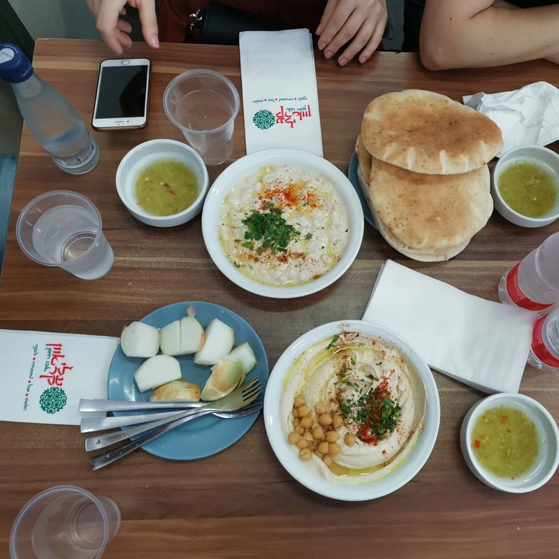
What to order: The "triple" — hummus, masabacha, and ful, all served together with warm pita and raw onion. The masabacha is arguably better than the hummus itself: whole chickpeas swimming in warm tahini. Get there early or eat somewhere else, because they literally run out of food.
"Abu Hassan for sure. There's always a line outside, with good reason. The Foul is also chef kiss 😽"
— r/Israel · Best hummus in TLV thread
"Go get hummus at Abu Hassan in Jaffa, it's a great meal of hummus and known as the best hummus in Tel Aviv."
— r/Israel · Visiting Tel Aviv thread
tabiji verdict: The most recommended hummusiya on all of Reddit, period. It's loud, it's crowded, there's no menu, and they close whenever they run out. That's the charm. The masabacha is the sleeper hit — order it. Arrive by 10:30 AM or risk the "we're done" sign.
💰 30–40 NIS
📍 Yishkon St 29, Kerem HaTeimanim
🍳 Try: Hummus with shakshuka
📌 Google Maps →
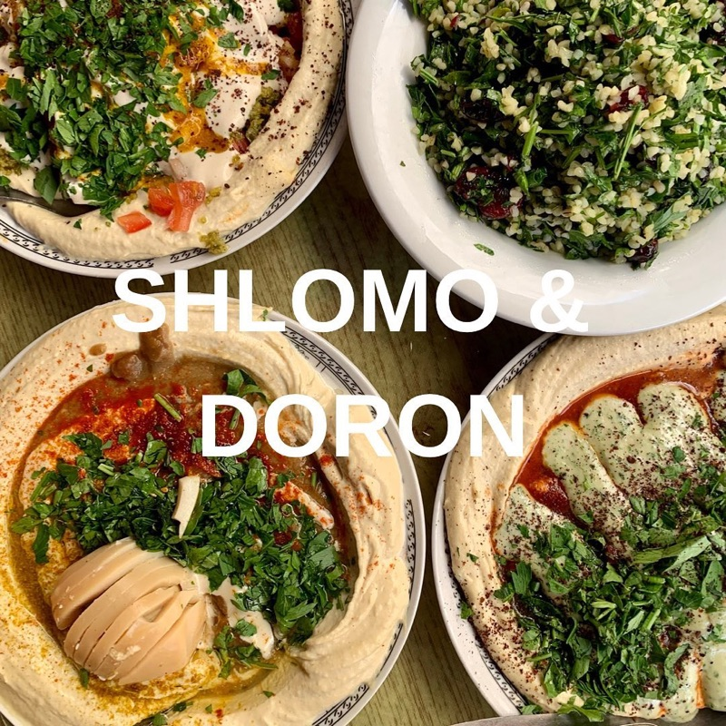
What to order: Hummus with shakshuka topping, or the sabich-style with eggplant and boiled egg. They take classic hummus and add inventive but respectful toppings — Moroccan-spiced mushrooms, roasted cauliflower. Near Carmel Market, so pair with a market stroll.
tabiji verdict: If Abu Hassan is the purist's choice, Shlomo & Doron is for the adventurous eater. The base hummus is excellent on its own, but the toppings elevate it into a full meal. The shakshuka version is borderline life-changing. Also kosher, which Abu Hassan isn't.
💰 25–35 NIS
📍 Central Tel Aviv
🥙 Also great: Shakshuka & falafel
📌 Google Maps →
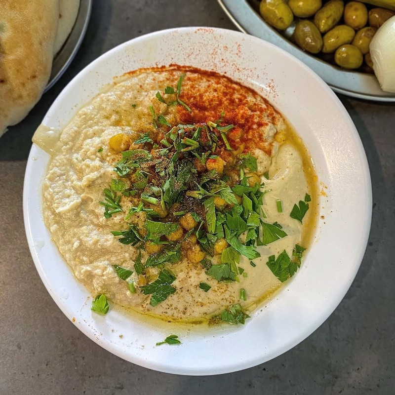
What to order: Straight-up hummus plate with all the fixings. Abu Adham doesn't try to reinvent the wheel — they just make excellent, traditional hummus with great falafel and shakshuka on the side. More central than Abu Hassan, so a good option if you're not heading to Jaffa.
tabiji verdict: The "Abu Hassan but in central Tel Aviv" pick. Same old-school energy, same no-frills approach, but without the Jaffa trek. Multiple Redditors recommend it as the alternative when Abu Hassan feels too far or too hyped. The falafel here is legit too.
💰 25–35 NIS
📍 Corner of Bugrashov & Pinsker, Tel Aviv
🫘 Specialty: Chunky masabacha-style
📌 Google Maps →
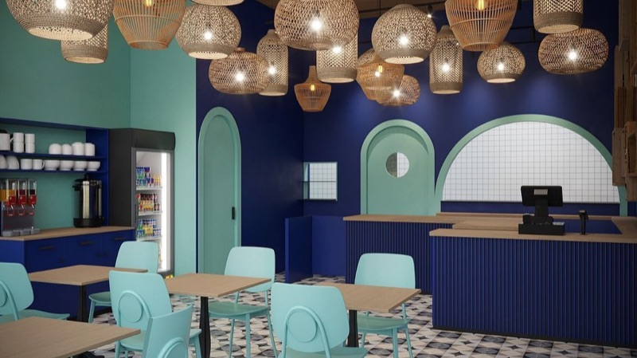
What to order: Their namesake mashawsha — a style of hummus with whole chickpeas that adds texture to the creamy base. The experience is different from typical smooth hummus; it's chunkier, more rustic, and incredibly satisfying. Homemade pickles and fresh salads on the side.
tabiji verdict: The connoisseur's pick. While tourists queue at Abu Hassan, locals who know their hummus come here for the textural experience. The whole-chickpea style is distinctly different from the smooth stuff — and once you try it, plain hummus might never feel complete again.
💰 30–40 NIS
📍 Levinsky Market, Florentin
🥬 Also try: Fried cauliflower, tabbouleh
📌 Google Maps →
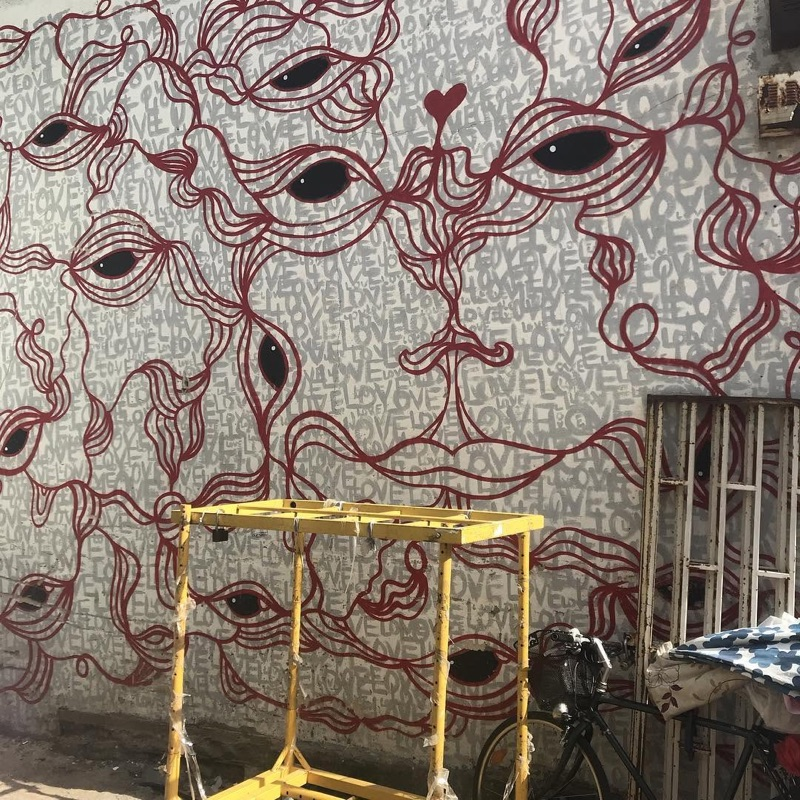
What to order: Classic hummus, plus their legendary fried cauliflower and fresh tabbouleh. Named after a famous hummusiya in Akko, this Levinsky Market spot has earned its own devoted following. The line of hipsters outside tells you everything.
tabiji verdict: The Florentin hipster pick — but don't let that put you off, because the hummus backs up the hype. The fried cauliflower alone is worth the visit. Combine with a Levinsky Market spice-shopping session for a perfect Tel Aviv morning.
💰 30–40 NIS
📍 King George St 81, Tel Aviv
🌿 Try: Green hummus (parsley, mint, garlic)
📌 Google Maps →
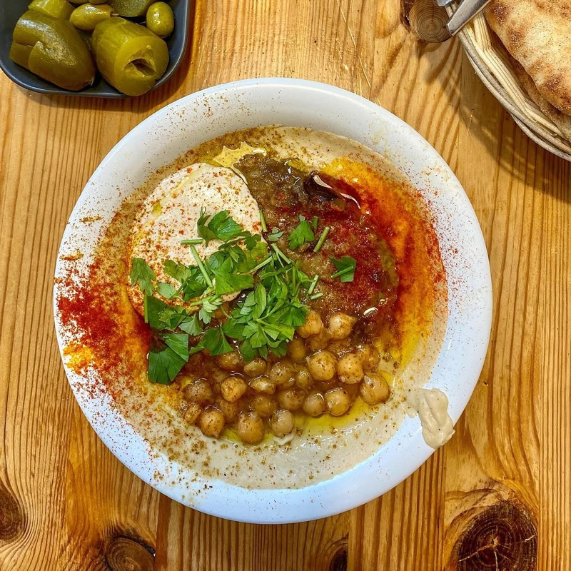
What to order: The green hummus with parsley, mint, and garlic is the signature. Cauliflower topping is also excellent. The owner had a dub music label before opening a hummusiya — and that weird career pivot somehow produced one of the best bowls in town.
"They are indeed my favorite. Please note that it is Abu Dubi, and that's not because of the state, but because he had a Dub music label."
— r/telaviv · Let's talk about Hummus thread
"The owner is a half Moroccan, half Ashkenazi dude with a great sense of humor. If you message him, he will give you his recipe."
— r/telaviv · Let's talk about Hummus thread
tabiji verdict: The most personality-packed hummusiya in Tel Aviv. A dub music producer making green hummus? Only in this city. Vegans especially love this place, but the food transcends dietary labels. Ask the owner about his recipe — he might actually share it.
💰 28–35 NIS
📍 Multiple locations (King George, Florentin, Jaffa)
🍵 Pro tip: Ask for the free tea
📌 Google Maps →
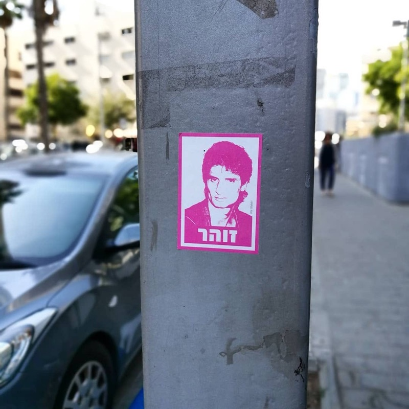
What to order: Classic hummus and ful. Yes, it's technically a chain — but the hummus is made fresh daily at each location and the ful is particularly good. The free tea is part of the experience. Multiple convenient locations across Tel Aviv.
"I'm surprised that I'm the first commenter to be appalled by the statement that Eliyahu is one of the top hummus restaurants in Tel Aviv."
— r/telaviv · Let's talk about Hummus thread
tabiji verdict: The polarizing pick. Some Redditors love the consistency and convenience; others are offended you'd even mention it alongside Abu Hassan. The truth: it's solid, reliable hummus with multiple locations. Perfect if you want good hummus without a pilgrimage. Not "best in the city" but never bad.
💰 25 NIS
📍 Yad Harutsim St 11, Tel Aviv
🫓 Known for: Amazing fresh pita
📌 Google Maps →
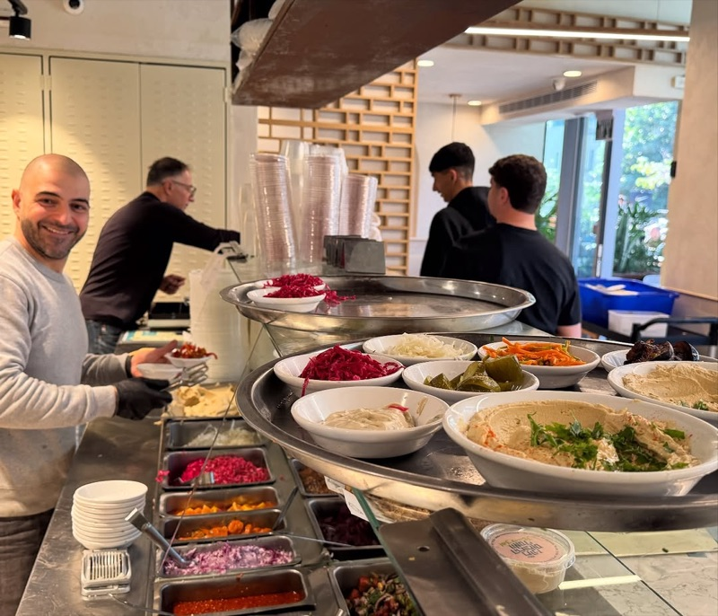
What to order: Regular hummus with spicy schug and a hard-boiled egg. The pita here is the real star — fluffy, fresh, served piping hot. It's not fancy and it's not famous, but locals love it for a reason. Fast service, honest food, no tourist markup.
tabiji verdict: The "locals-only" hummusiya. No English menu, no Instagram presence, no tourist crowds. Just incredibly fresh pita, solid hummus, and the kind of fast, no-nonsense service that Tel Aviv does better than anywhere. At 25 NIS, it's also one of the cheapest on this list.
💰 25–30 NIS
📍 Florentin neighborhood, Tel Aviv
🍆 Try: Hummus + roasted eggplant
📌 Google Maps →
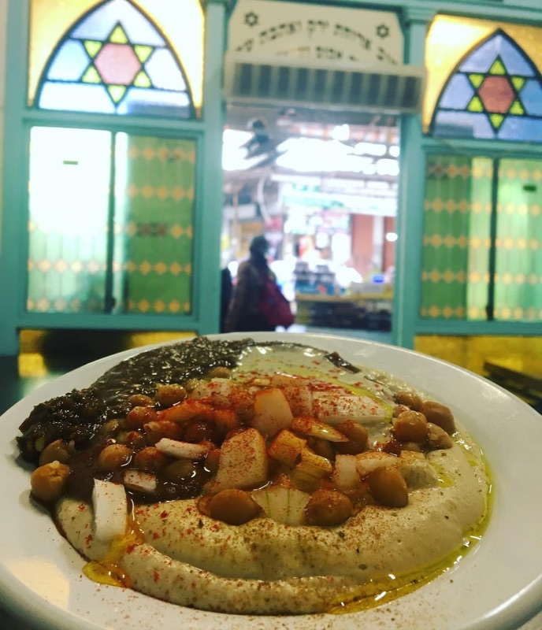
What to order: Hummus with roasted eggplant or the tahini-topped special. Tucked in artsy Florentin, this is where locals go post-yoga or pre-night-out. Chill vibes, no tourist rush, and a solid bowl of hummus that doesn't need a two-hour queue to enjoy.
"HaHummus Shel Tehina in Florentin is cozy and chill."
— multiple r/Israel and r/telaviv threads
tabiji verdict: The neighborhood hummusiya that Florentin residents guard jealously. No lines, no hype, just excellent hummus in a laid-back setting. If you're staying in Florentin, this is your default breakfast spot. Pair with street art walking afterward.
💰 25–30 NIS
📍 Carmel Market area, Tel Aviv
🏛️ Fun fact: Built into an old synagogue
📌 Google Maps →
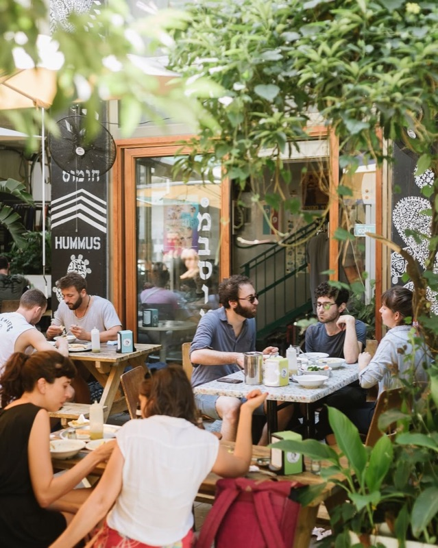
What to order: Classic hummus with their house-made hot sauce (not for the faint of heart). The setting is the real draw — it's built into an old synagogue near Carmel Market, giving it an atmosphere no other hummusiya can match. Super silky hummus with a sharp tahini kick.
"There's also Hummus HaCarmel — I don't actually know what the taste is like there but it's built into an old synagogue which is cool."
— r/Israel · Must-visit restaurants thread
tabiji verdict: The most Instagrammable hummus experience in Tel Aviv — an old synagogue turned hummusiya. But the food holds up beyond the setting. The hot sauce is legitimately fiery, so ask for it on the side if you're spice-cautious. Perfect mid-Carmel-Market fuel stop.
💰 28–35 NIS
📍 Levinsky Market area, Tel Aviv
🫓 Famous for: Special machine-steamed pita
📌 Google Maps →
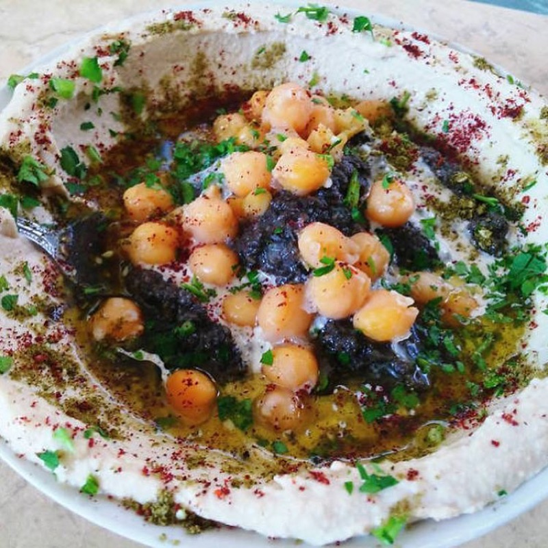
What to order: The hummus is great, but the pita is the real revelation. They use a special machine that steams then bakes each pita, producing something closer to a fluffy bao bun than regular flatbread. Open every day except Sunday. In the hipster Levinsky Market neighborhood.
tabiji verdict: Come for the hummus, stay for the pita. That steam-then-bake technique creates a bread experience you genuinely won't find anywhere else. If you care about the bread as much as the dip (and you should), Mabsuta is your spot.
💰 28–35 NIS
📍 Yirmeyahu St 45, Tel Aviv
🌙 Open until midnight and beyond
📌 Google Maps →
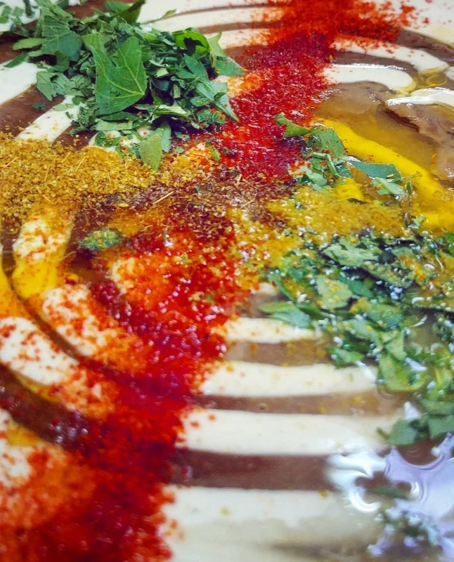
What to order: Classic hummus with spicy paprika oil. Free refills on pickles. This is the go-to for post-party carbs when every other hummusiya has been closed for hours. Outdoor seating for those warm Tel Aviv nights.
tabiji verdict: Every city needs a late-night hummus spot, and Ashkara is Tel Aviv's. When you stumble out of a bar on Rothschild at midnight and need something warm, cheap, and carb-heavy, this is where you go. The paprika oil is the sleeper hit.
💰 25–30 NIS
📍 Near Magen David Square, Tel Aviv
🏙️ Central, walkable location
📌 Google Maps →
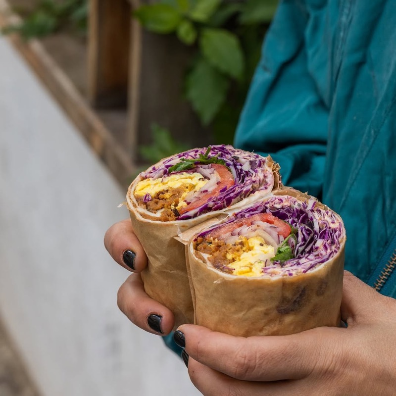
What to order: Standard hummus plate. Same ownership as Hamudot (see #14), and the quality is similarly reliable. Central location near the Magen David Square intersection makes it an easy stop between Carmel Market and the city center.
tabiji verdict: Not the most exciting pick, but sometimes you just want good, reliable hummus in a convenient location without a 45-minute wait. Magen David delivers exactly that. The no-frills approach is a feature, not a bug.
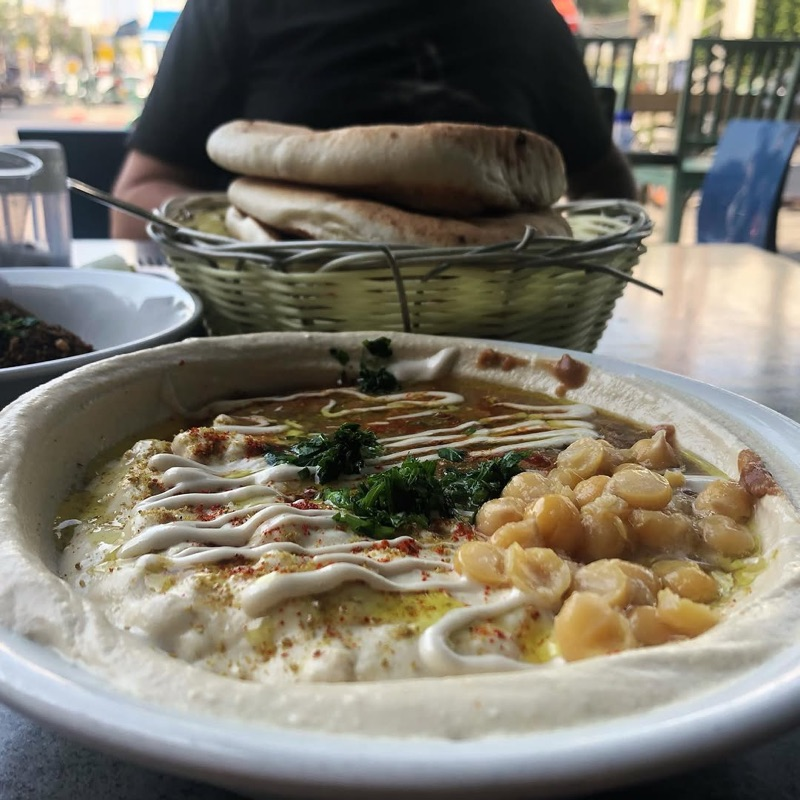
What to order: Hummus with toppings of the day. Hamudot is the kind of place that shows up in Reddit listicles from people who clearly live in Tel Aviv — not the tourist-bait spots, but the steady, reliable hummusiyas that feed the city daily.
tabiji verdict: The ultimate "if you know, you know" pick. No one's writing blog posts about Hamudot, but it keeps showing up in locals' recommendation lists. That quiet consistency is worth more than any Instagram hype.
💰 25–35 NIS
📍 Southern Tel Aviv
🧆 Don't miss: The falafel and msabbaha
📌 Google Maps →
What to order: The msabbaha (warm, chunky hummus with whole chickpeas in tahini) and falafel. Like Abu Hassan, the msabbaha here is arguably better than the plain hummus. South Tel Aviv doesn't get much tourist traffic, which means authentic prices and zero queue.
tabiji verdict: The off-the-beaten-path closer. If you've eaten your way through the famous spots and want something the tourists haven't found yet, head south. The msabbaha-and-falafel combo is a top-three meal on this entire list.
Frequently Asked Questions
What time should I arrive at a hummusiya in Tel Aviv?
Most serious hummusiyas open between 7–8 AM and many sell out by early afternoon — some as early as 1–2 PM. Abu Hassan famously runs out by 2:30 PM on busy days. The golden window is 9–11 AM: short lines, fresh batches, and no risk of the "sorry, we're done" sign. Friday is the busiest day (pre-Shabbat rush), so arrive even earlier.
How much does hummus cost in Tel Aviv?
A plate of hummus with pita, pickles, and onion typically costs 25–40 NIS ($7–$11 USD). Most hummusiyas are cash-only or accept local payment apps. A full meal with toppings, drinks, and extras rarely exceeds 60 NIS ($16). It's one of the cheapest quality meals in an otherwise expensive city.
What's the difference between hummus, masabacha, and ful?
Hummus is the classic smooth chickpea-tahini puree. Masabacha (also called msabbaha) is a chunkier, warmer version with whole chickpeas swimming in tahini — many locals consider it superior to regular hummus. Ful (fava beans) is a heartier, earthier dish often served alongside. At Abu Hassan, ordering the "triple" gets you all three.
Is hummus in Tel Aviv vegan?
Basic hummus is naturally vegan — chickpeas, tahini, olive oil, lemon, garlic. However, many toppings are not: hard-boiled eggs, shawarma, and ground meat are common additions. Places like Abu Dubi and HaHummus Shel Tchina are particularly vegan-friendly. Always check if toppings contain animal products.
Which Tel Aviv neighborhoods are best for a hummus crawl?
Three neighborhoods dominate: Jaffa (Abu Hassan and the oldest hummusiyas), Florentin/Levinsky Market (Garger HaZahav, Mabsuta, Abu Dubi — all walkable), and Kerem HaTeimanim near Carmel Market (Shlomo & Doron, Hummus HaCarmel). A proper hummus crawl hitting 3–4 spots takes half a day and costs under 100 NIS.